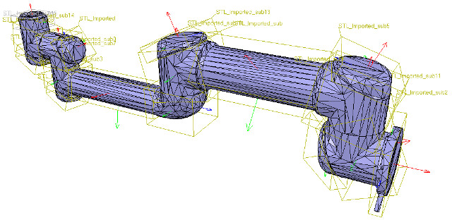

week10-14 <<
Previous Next >> note
week15-18
WEEK15
W15 2b 個人學習成果回報影片
WEEK16
心得:
現在到了第16週了，也慢慢接近尾聲，作業遠遠比以前的難很多，自己有些跟不上，也做不太好，所以只能照著同學的影片，一步一步慢慢來，雖然自己的程度不是很好，但是其實一步一步做後完成的那個成就感也是有的，所以希望之後能夠越來越好。
WEEK17
(二)獨立製作題
心得 : 這次的任務比之前在更難了，要將原本車身與主連桿所採用的馬達鎖定設計, 改為機械阻尼設計，這個我真的不怎麼會，只能先把簡單的部分先做一做，把該拿的分數拿到，總比放棄好。希望能夠越來越好 !
(一)協同任務
任務一: 分配到 Building a clean model tutorial 前半段 Building the visible shapes 的部分
notice how the convex hull doesn't help us at this stage. We decide to use the mesh decimation function first, and run the function twice in order to divide the number of triangles by a total of 50. Once that is done, we extract the inside of the simplified shape and discard it. We end-up with a mesh containing a total of 2'660 triangles (the original imported mesh contained more than 136'000 triangles!). The number of triangles/vertices a shape contains can be seen in the shape geometry dialog. 2'660 triangles are extremely few triangles for a whole robot model, and the visual appearance might suffer a little bit from it.
翻譯:
這個階段凸殼對我們沒有幫助。 決定首先用網格抽取功能，然後運行兩次該功能，以將三角形的數量總共除以50。完成後，提取簡化形狀的內部並將其丟棄。 最終得到的網格總共包含2'660個三角形（原始導入的網格包含了136'000個三角形！）。 形狀包含的三角形/頂點的數量可以在形狀幾何對話框中看到。 對於整個機器人模型，2'660三角形是極少的三角形，因此視覺外觀可能會因此受到影響。
At this stage we can start to divide the robot into separate links (remember, we currently have only a single shape for the whole robot). You can do this in two different ways:
翻譯:
在這一階段，可以開始將機器人劃分為單獨的鏈接（目前整個機器人只有一個形狀）。 可以通過兩種不同的方式執行此操作：
1. Automatic mesh division: this function, which was already described in previous section, will inspect the shape and generate a new shape for all elements that are not linked together via a common edge. This does not always work, but is always worth a try. The function can be accessed with [Menu bar --> Edit --> Grouping/merging --> Divide selected shapes].
翻譯:
1.自動網格劃分：此功能已在上一節中進行了描述，它將檢查形狀並為未通過公共邊鏈接在一起的所有元素生成新形狀。 這並不總是有效，但是值得嘗試的。 可以通過[菜單欄->編輯->分組/合併->分割所選形狀]叫出該功能。
2.Manual mesh division: via the the triangle edit mode, you can manually select the triangles than logically belong together, then click Extract shape. This will generate a new shape in the scene. Delete the selected triangles after that operation.
翻譯:
2.手動網格劃分：通過三角形編輯模式，您可以手動選擇不屬於邏輯的三角形，然後點擊“提取形狀”。 這將在場景中生成新形狀。 完成該操作後，刪除選定的三角形。
In the case of our mesh, method 1 worked fine:
翻譯:
對於我們的網格，方法1可以正常工作：

[Divided mesh]
Now, we could further refine/simplify individual shapes. Sometimes also, a shape might look better if its convex hull is used instead. Othertimes, you will have to use several of above's described techniques iteratively, in order to obtain the desired result. Take for instance following mesh:
翻譯:
現在，我們可以進一步細化/簡化單個形狀。 有時，如果改用凸殼，形狀可能會看起來更好。 有時，您將不得不反複使用上述幾種技術，以獲得所需的結果。 以以下網格為例：

[Imported mesh]
The problem with above's shape is that we cannot simplify it nicely, because of the holes it contains. where we can extract individual elements that logically belong to the same convex sub-entity. This process can take several iterations: we first extract 3 approximate convex elements. For now, we ignore the triangles that are part of the two holes. While editing a shape in the shape edit mode, it can be convenient to switch the visibility layers, in order to see what is covered by other scene items.
翻譯:
上面形狀的問題是，由於其中包含孔，我們無法很好地簡化它。在這裡我們可以提取邏輯上屬於同一個凸子實體的單個元素。此過程可能需要進行多次迭代：我們首先提取3個近似凸元素。 現在，我們忽略作為兩個孔的一部分的三角形。 在形狀編輯模式下編輯形狀時，可以方便地切換可見性圖層，以查看其他場景項所覆蓋的內容。

Now we can erase the triangles that are part of the holes. Finally, we extract the convex hull individually for the 3 shapes, then merge them back together with [Menu bar --> Edit --> Grouping/Merging --> merge selected shapes]:
翻譯:
現在我們可以除作為孔的一部分的三角形。 最後，我們分別提取3種形狀的凸包，然後將其與[菜單欄->編輯->分組/合併->合併所選形狀]合併在一起：

We can enable/disable edge display for each shape. We can also specify an angle that will be taken into account for the edge display.Those parameters, and a few others such as the shape color, can be adjusted in the shape properties. In this tutorial we have only dealt with simple shapes up to now: a simple shape has a single set of visual attributes (i.e. one color, one shading angle, etc.). If you merge two shapes, then the result will be a simple shape.
翻譯:
我們可以啟用/禁用每種形狀的邊緣顯示。我們還可以指定邊緣顯示時要考慮的角度。這些參數以及其他一些參數（例如形狀顏色）可以在形狀屬性中進行調整，在本教程中，我們僅處理簡單的形狀：簡單的形狀具有一組視覺屬性（即一種顏色，一個陰影角度等），如果合併兩個形狀，則結果將是一個簡單的形狀。
In next step, we can merge elements that logically belong together. Then we change the visual attributes of the various elements.Then, we select all the shapes that have the same visual attributes, then control-select the shape that was already adjusted
翻譯:
在下一步中，我們可以合併邏輯上屬於一起的元素，然後，我們更改各種元素的視覺屬性。再來，我們選擇所有具有相同視覺屬性的形狀，然後控制選擇已調整的形狀。

Now we can group the shapes that are part of the same link with [Menu bar --> Edit --> Grouping/merging -> Group selected shapes]. We end up with 7 shapes: the base of the robot (or base of the robot's hierarchy tree), and 6 mobile links.
翻譯:
現在，我們可以使用[菜單欄->編輯->分組/合併->分組所選形狀]對屬於同一鏈接的形狀進行分組。我們最終得到7個形狀：機器人的基礎（或機器人的層次結構樹的基礎）和6個移動鏈接。

When a shape is created or modified, CoppeliaSim will automatically set its reference frame position and orientation. A shape's reference frame will always be positioned at the shape's geometric center. The frame orientation will be selected so that the shape's bounding box remains as small as possible.
翻譯:
創建或修改形狀時，CoppeliaSim將自動設置其參考框架的位置和方向。 形狀的參考框架將始終位於形狀的幾何中心。 將選擇框架方向，以便形狀的邊界框保持盡可能小。
week10-14 <<
Previous Next >> note